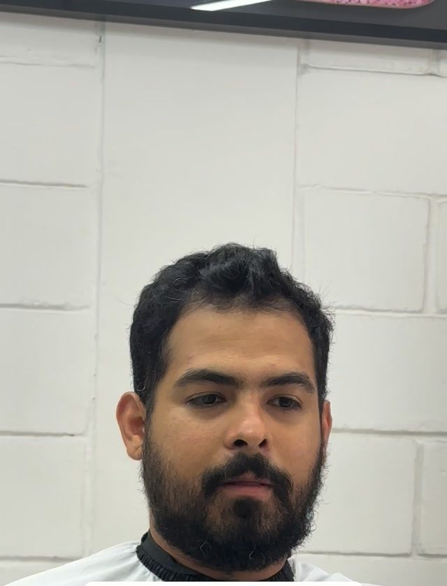
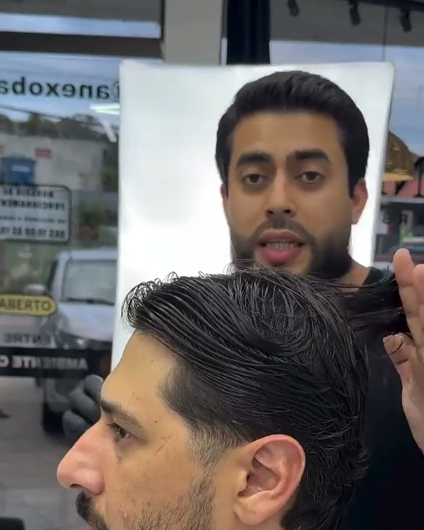
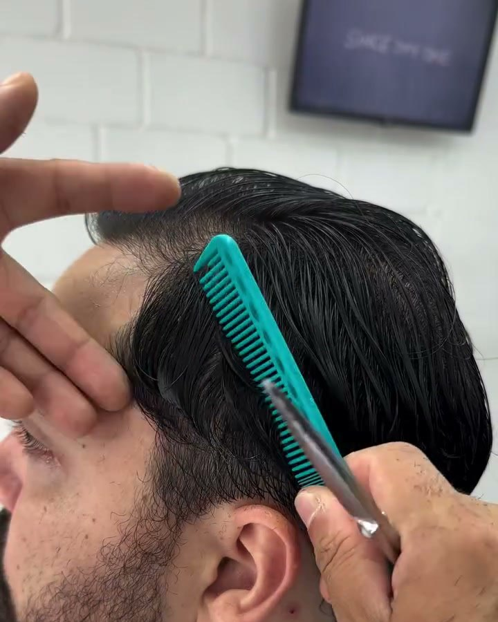

Módulo01 / 06
Fundamentos del visagismo
Qué comunica una imagen. Líneas, formas y lo que transmiten.

Curso online · Visagismo para barberos
El curso online de visagismo para barberos. Aprendé a leer cada rostro y a crear el corte y la barba que le corresponden a cada cliente.
Manifiesto
Cualquiera copia una foto. Un visagista lee un rostro, entiende a la persona y proyecta una imagen.
Tu cliente no quiere el corte de la foto. Quiere verse bien él.
El método
Cuatro pasos. Siempre en este orden.

Análisis facial: formato, tercios y perfil. Primero se mira, después se corta.

Estructura, proporción y equilibrio pensados para ese rostro.

Tijera, textura y barba: la técnica al servicio del proyecto.

La consulta: explicar el proyecto y darle valor a tu trabajo.
Programa
Del análisis del rostro a la consulta con el cliente: todo lo que necesitás para proyectar un corte, no adivinarlo.
Qué comunica una imagen. Líneas, formas y lo que transmiten.
Formatos de rostro, tercios, perfil y cráneo. Medir antes de cortar.

Proporción, equilibrio y volumen proyectados para cada rostro.

Cortar y texturizar al mismo tiempo, crear movimiento, laterales rápidos y precisos.
Diseño y armonización de la barba según el rostro.

Escucha activa, diagnóstico y cómo presentar y cobrar un proyecto de imagen.
Después del curso

Quién enseña
Barbero consultor y visagista hace más de 10 años. Creo visuales únicos y personalizados, y todos los días enseño a otros barberos a hacer lo mismo.
@curso_barberovisagista
Alumnos
Acá va el testimonio real de un alumno.
Acá va el testimonio real de un alumno.
Acá va el testimonio real de un alumno.
Inscripción
Consultá el valor y las formas de pago por WhatsApp.
Quiero entrar al cursoIncluye
Necesitás saber cortar lo básico. El curso no reemplaza la práctica: le suma criterio.
Es 100% online. Lo ves desde el celular o la compu, a tu ritmo.
Sí. El visagismo te da el porqué de cada decisión que hoy tomás por intuición.
Las clases son en español.
Escribime por WhatsApp y te paso el valor, las formas de pago y el acceso.